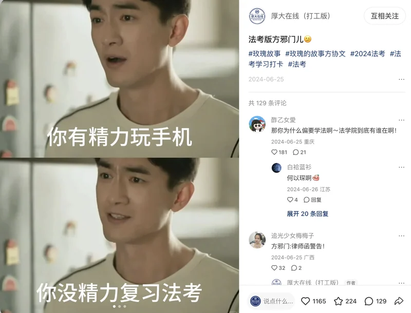
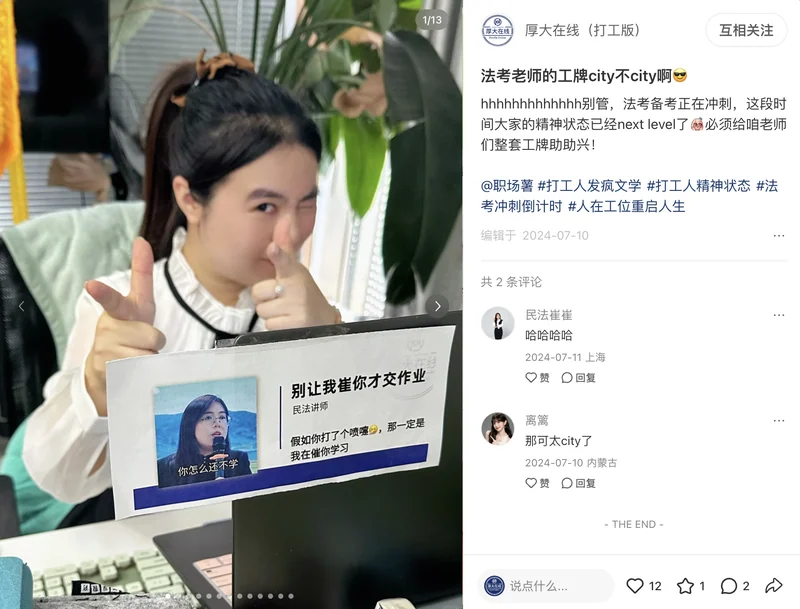
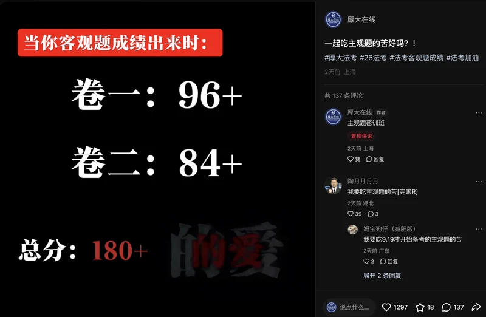
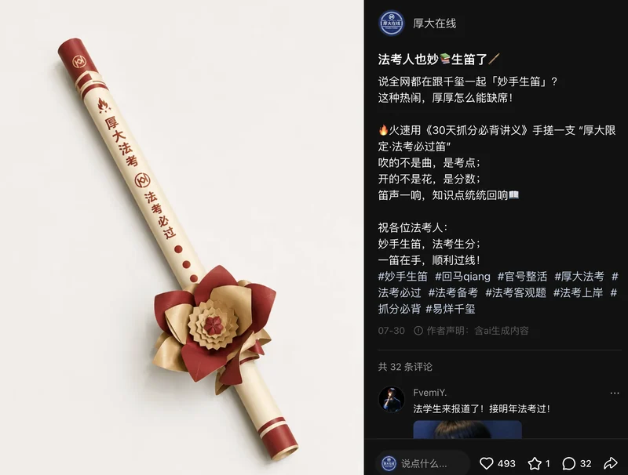
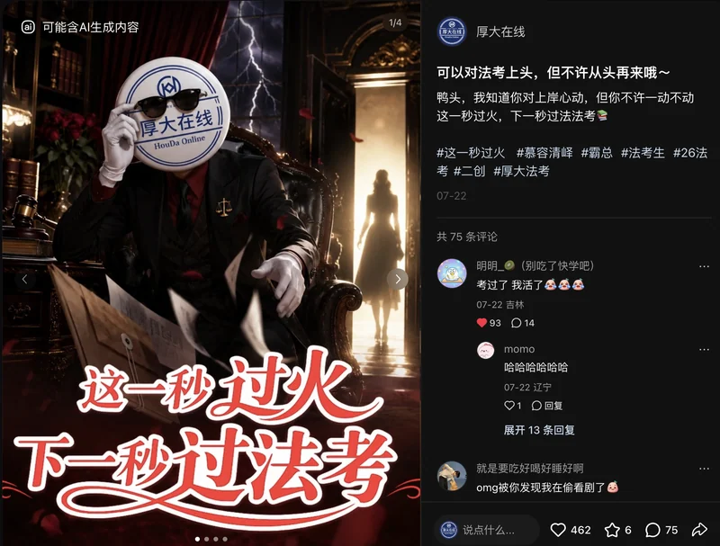
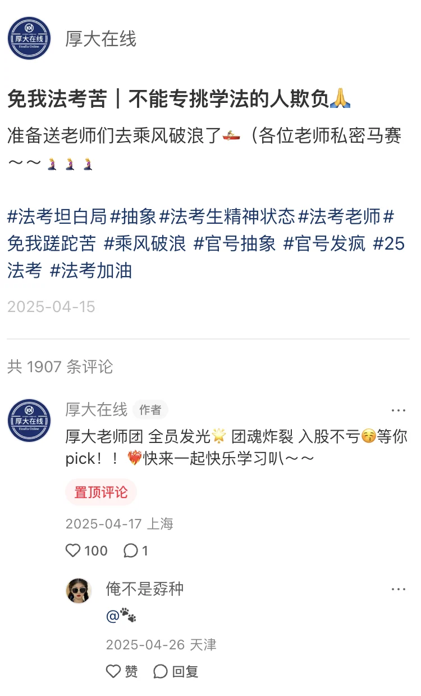
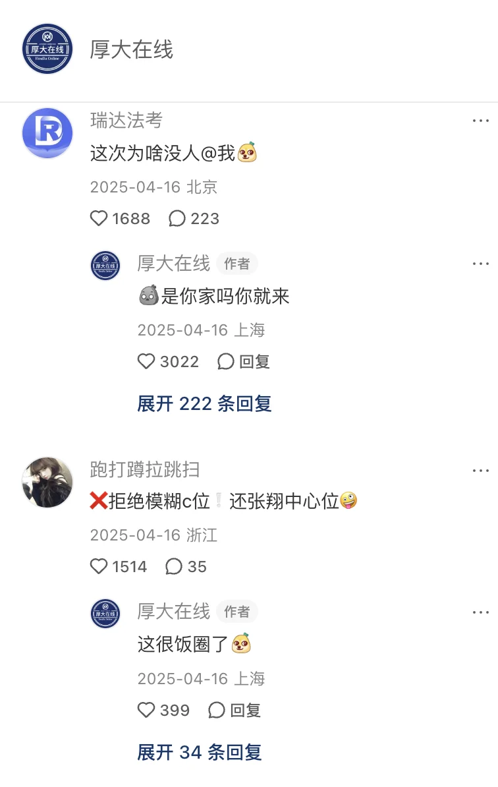

官方内容承接
以稳定、清晰的品牌表达承接课程、老师和业务活动，建立可信的官方内容入口。
01 ACCOUNT SYSTEM
内容量增长后新增账号，两个账号在持续运营中逐渐形成不同表达：主官号承接品牌与业务信息，打工版更多使用员工视角和法学生共鸣。选题允许交叉，主官号也会发布趣味内容。
公司官方品牌账号，承担品牌信任、产品信息与业务节点表达。
公司内部轻量内容账号，以员工视角和法学生共鸣进入公域。
课程信息、老师内容、备考知识、活动发布与产品承接。
法学生梗、老师动态、考试情绪、职场视角与软性产品露出。
选题、文案、素材统筹、发布互动、活动配合与信息协同。
从0搭建账号，在运营中调整定位，独立完成选题、写作、视觉、发布与互动。
2024.07—至今
2023.12—2025.09
3.8万当前粉丝
约2万阶段粉丝
以稳定、清晰的品牌表达承接课程、老师和业务活动，建立可信的官方内容入口。
以员工人格和法学生共鸣降低传播门槛，让品牌自然进入讨论和分享场景。
02 CONTENT WORKFLOW
我的工作不是单点发帖，而是从用户情绪、老师特点和业务节点出发，把创意、制作、互动与产品表达串成完整内容链路。
判断法学生是否有共鸣，结合考试周期、老师动态和高讨论话题。
独立完成文案、梗图、截图编排与发布素材，让表达更像用户内容。
选择账号和发布时间，持续回复评论，利用讨论热度扩大触达。
在教材、课程与老师内容出现的合理场景里完成品牌和产品露出。
关注内容互动表现，并参考同类账号的表达方式调整选题。
03 REAL CONTENT
精选两个账号各 6 篇代表作品。可按账号筛选，点击图片查看完整内容与互动表现。
厚大在线（打工版）
我将影视热梗、老师素材与学习场景结合，尝试不同形式的图文表达。

热梗改编 · 备考情绪将影视热梗改编为法考语境，用“玩手机”与“复习法考”的反差表达备考日常。

老师 IP · 图文创意把老师素材、学科信息与催学文案组合成工牌形式，将老师内容融入日常学习场景。
以番茄 Todo 的计时界面为创意场景，结合学科名称与老师素材，表达备考中的紧迫感。
厚大在线 · 近期笔记
围绕考试节点、备考需求与平台热梗，开展话题互动、资料内容与产品软广创作。

围绕客观题成绩话题，用分数画面与“一起吃主观题的苦”的表达邀请用户接话，并在置顶评论补充主观题课程信息。
独立完成内容创作、发布与互动。
查看发布记录 ↗将教学部门整理的考点资料制作成笔记封面并发布，方便用户查看和收藏；正文与置顶评论同步考情分析直播信息。
考点资料由教学部门整理；本人负责封面制作、发布与互动。
查看发布记录 ↗
以“妙手生笛”热梗为切入点，将厚大品牌元素融入笛子造型的创意画面，并在文案中结合《30天抓分必背讲义》与备考祝福。
独立完成内容创作、发布与互动。
查看发布记录 ↗将“Duo Duo”的谐音与提分祝福结合，在手机画面中融入法考证书，让热梗贴近备考话题。
独立完成内容创作、发布与互动。
查看发布记录 ↗
借用剧情热梗，将官号标志融入人物画面，再以“过火”与“过法考”的文字关联延展备考表达，邀请用户接梗。
独立完成内容创作、发布与互动。
查看发布记录 ↗系列内容创作
我尝试水果拟人和情感剧情两类短剧，独立完成选题、剧本、画面制作、配音与剪辑，拓展官号的内容形式。
我用水果拟人角色创作法学主题短剧，结合不同场景延续系列内容。
老师 IP 以厚大授课老师为主体，厚厚代表厚大官号，过儿代表法考生。我根据三个 IP 的不同身份开展内容策划与运营。
我以热梗为切入点，结合备考情绪确定改编方向。先梳理改词大纲，将做真题、期待分数进步与拿证的愿望写入歌词，最后以厚大品牌收束。
制作过程：改词大纲 → 用 Viggle AI 的动作模仿为老师分别生成动作素材 → 汇入剪映剪辑与配乐 → 账号发布。选题、歌词改编、AI动作素材制作、剪辑配乐、发布及官号评论回复，均由我独立完成。
歌词里的具体场景：“不能专挑学法的人欺负”“多做点真题也该有点分数进步”“学法的人别认输”。通过热梗改编表达用户熟悉的备考经历，结尾落到“跟着厚大法考就不会苦”。
评论中的 IP 识别：用户用“C位”“张翔中心位”讨论具体老师；官号置顶评论继续使用“老师团”“pick”等表达。同业账号也参与接话，形成了可观察的账号互动。
作品获得52.7万次播放、约1.5万点赞、1,386次收藏、1,900+条评论与7,585次分享。评论中，用户围绕具体老师展开讨论，官号继续以轻松的语言回应。


厚厚是厚大官号的拟人形象，代表厚大与用户互动。我结合平台拟人化内容与用户互动需求提出设计要求，明确主色调、性别方向、外形特征与 Logo 应用，由设计师完成角色视觉设计。
围绕备考情绪、老师内容和教材信息持续创作，以“厚厚”的角色口吻参与用户及账号间互动，逐步形成角色的语言风格。在“一起过法考”中，我通过热梗改编回应用户迫切希望通过考试的心情，并借助AI软件制作角色动作、ACE Studio等软件制作改编音频，完成后期剪辑。
代表作“一起过法考”获得3.8万浏览、5,300+点赞、957次收藏、232条评论与279次分享。独立案例收录25条作品，展示角色在不同内容场景中的应用。
过儿是代表法考生的角色 IP。我围绕学习与备考日常开展图文创作，并在小课堂中让过儿以听课学生的身份参与内容表达。
在品牌联动过程中，我使用过儿相关物料，配合活动展示与传播。
传播型作品重点看分享和有效讨论；角色内容还要看用户是否记住角色、期待后续；活动内容则需要追踪参与后的关注、咨询或下一步行为。三种任务不宜只按点赞量排名。
04 MY ROLE
我承担的是一条完整的内容运营链路。既做前端内容，也负责评论互动、活动承接、产品软广和内部协同。
根据实际发布需要调整两个账号的内容侧重，兼顾品牌信息、趣味内容与产品活动。
围绕法学生共鸣、老师内容、备考周期和业务节点完成选题、写作和视觉制作。
负责发布节奏与评论互动，围绕用户留言中的具体话题继续交流。
在合适的梗图和知识场景里露出教材课程，并配合老师账号和业务活动发布。
协调内部素材和发布需求，根据内容反馈持续判断题材、形式和账号分工。
同一品牌下完成正式承接与轻量传播的协同
{kind=link}
{kind=link}
{kind=link}
{kind=link}
{kind=link}
{kind=link}
{kind=link}
{kind=link}
{kind=link}
{kind=link}
{kind=link}
{kind=link}
{kind=link}
{kind=link}
{kind=link}
{kind=link}
{kind=link}
{kind=link}
{kind=link}
{kind=link}
{kind=link}
{kind=link}
{kind=link}
{kind=link}